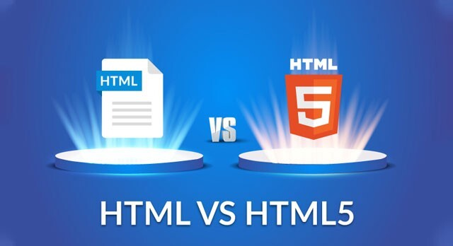

.jpeg)
.jpeg)
.jpeg)
.jpeg)
The Benefits of HTML5 Over HTML: Enhancing Modern Web Development
Web development has come a long way since the early days of the internet, and one of the most significant advancements in this field is the transition from traditional HTML to HTML5.
Released in 2014, HTML5 offers a host of new features that make it easier and more efficient to create modern websites and applications.
Let's explore some of the key benefits of HTML5 and how it enhances the web development experience.
HTML5 offers a range of features that modernize and simplify web development compared to its predecessor, HTML. Here's a closer look at the key benefits of HTML5:
Built-In Media Support
One of the standout features of HTML5 is its ability to support multimedia elements directly. Developers can now easily embed audio and video using the <audio> and <video> tags. This means there's no need for cumbersome third-party plugins like Flash. The result? A smoother and more consistent user experience across all devices, making it easier for users to enjoy rich media without any hassle.
Mobile Support and Responsiveness
With the rise of smartphones and tablets, mobile compatibility is more important than ever. HTML5 was designed with mobile in mind, allowing developers to create responsive designs that work seamlessly on any screen size. This means that users can enjoy a consistent and engaging experience, whether they're browsing on a desktop at home or scrolling on their phones while on the go.
Improved Semantic Structure
HTML5 also brings a much-needed upgrade to how we structure our web content. It introduces semantic elements like <header>, <footer>, and <article>, which help organize information more logically. This not only enhances the overall readability of the code but also makes it easier for search engines and screen readers to interpret the content. In turn, this boosts SEO and accessibility, ensuring that more people can find and engage with your website.
Enhanced Forms
Forms are a crucial part of many websites, and HTML5 makes them easier to create and manage. With new input types like date, email, and number, developers can simplify the data entry process and improve validation. This leads to fewer errors and a better experience for users, who appreciate forms that are straightforward and intuitive.
Local Storage and Offline Capabilities
Imagine being able to access your favorite web applications even when you're offline. HTML5 allows for local storage through localStorage and sessionStorage, which means that data can be saved directly in the user's browser. This feature not only speeds up page loads but also enhances user engagement, as people can interact with content without needing a constant internet connection.
Canvas and Graphics Support
For those looking to add a bit of flair to their websites, HTML5 offers the <canvas> element, enabling dynamic graphics and animations right in the browser. This capability eliminates the need for external libraries for simple graphics tasks, allowing for greater creativity and flexibility in design.
Accessibility and SEO Benefits
HTML5's semantic elements also play a crucial role in accessibility. By using the proper tags, developers can make their websites more user-friendly for those with disabilities. Additionally, search engines can better understand and rank content, which is a win-win for both users and website owners aiming for higher visibility.
Simplified Doctype Declaration
HTML5 has also simplified the doctype declaration to just <!DOCTYPE html>, making it much easier for developers to get started. This reduction in complexity helps prevent errors and promotes a cleaner coding experience, allowing developers to focus on what really matters—creating great websites.
Backward Compatibility
Lastly, one of the best aspects of HTML5 is its backward compatibility. Older browsers can still interpret HTML5 code gracefully, which means developers don't have to sacrifice functionality for modern features. This smooth transition makes HTML5 a reliable choice for developers looking to future-proof their work.